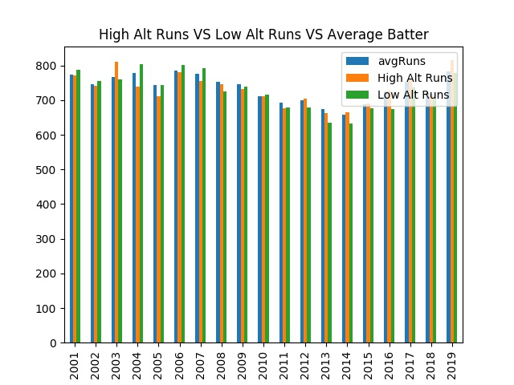
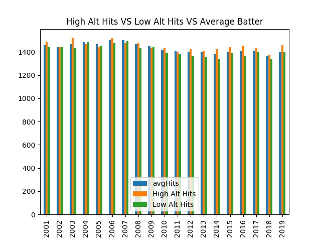
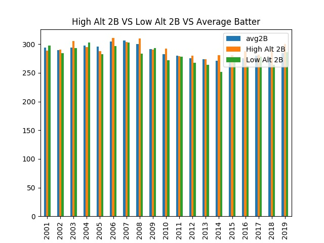
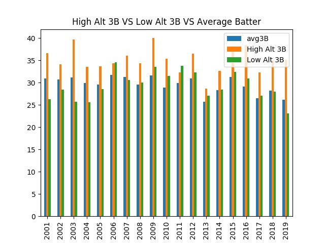
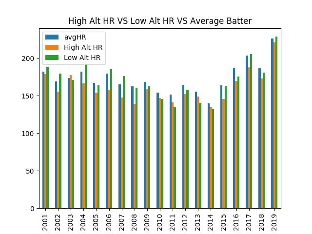

It is well known that altitude affects athletic performance, largely in part due to the lower density in oxygen levels in the blood, brain, and pulmonary system at higher altitudes. Specifically, for an athlete who mostly trained at a lower altitude who then migrates to a higher elevation, the athlete would suffer in performance from the sudden change in oxygen density. It would take approximately 6 weeks for this athlete to acclimate to the higher altitude. On the other hand, for athletes who have been mostly training at a higher altitude, they can have a significant (1-2%) advantage when competing at a lower altitude due to their bodies having adapted to have increased oxygen efficiency. Thus we wanted to analyze and see if this has any effect on the scoring and performances of teams based in different altitudes.
The average (blue) statistic is our control group, representing the stats of all of the teams. The orange bars represent the averages of teams based in cities with an elevation over 800 feet and the green represent the averages of teams based in cities with less than 100 feet of elevation above sea level. Here we can see a slight trend before 2011 with low altitude teams having more runs than the average team which had more runs than the high altitude teams. After 2011, it seems the trend flipped, with high altitude teams having more runs than the average team which had more runs than the low altitude teams.
On average, higher altitude teams seem to have more hits than lower altitude teams as shown by the graph, especially in the more recent years. Even when the lower altitude teams have more hits, it is by a small margin.
Again, the graph indicates that the higher altitude teams tend to have more second base runs with a stronger correlation in the recent years.
The correlation for third base runs is even stronger with higher altitude teams clearly averaging more than the average and lower altitude teams, and by quite a bit! This is quite interesting as it suggests that higher altitude teams possibly have better sprinting endurance due to the lower correlation in the 2B chart. This is in line with our beginning remarks on the effects of high altitude training.
Surprisingly, the trend flips here with low altitude and average teams having roughly the same amount of home runs but both clearly having more than high altitude teams in most years. For the most part so far, we've seen results consistent with our understanding of high altitude training and its effects. However, this result for home runs seems to go against that belief. This is highly interesting and would require further, more varied testing to form new hypotheses.
{% endblock %}